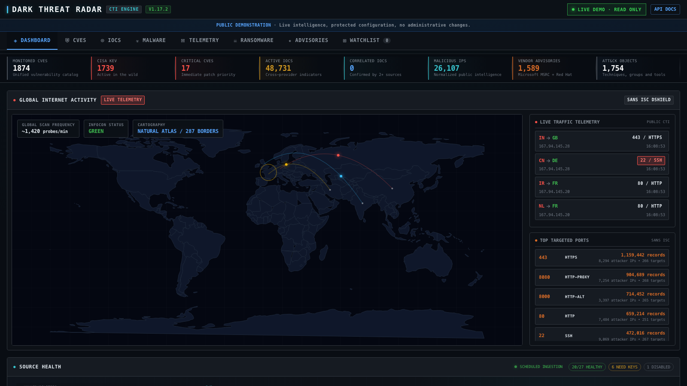
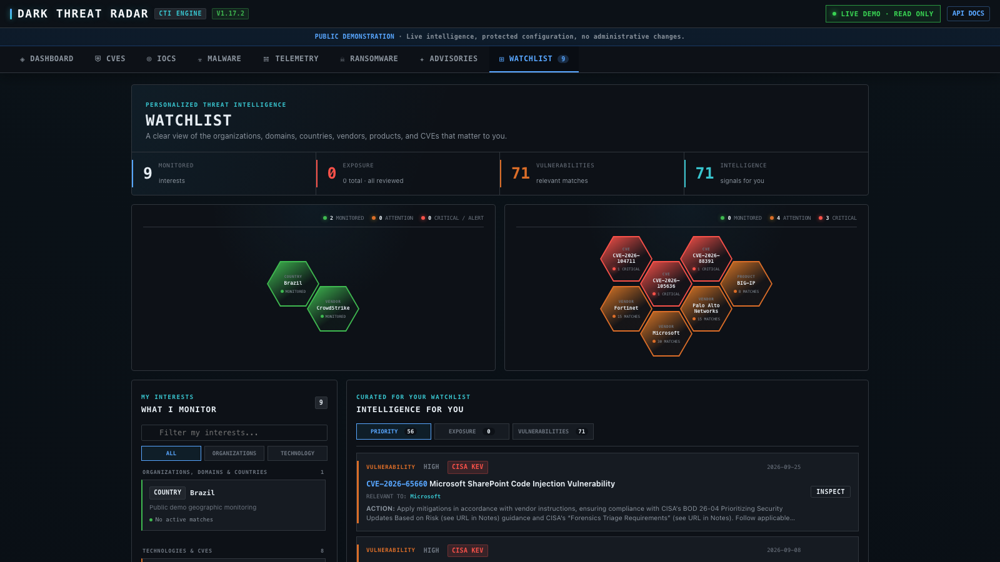
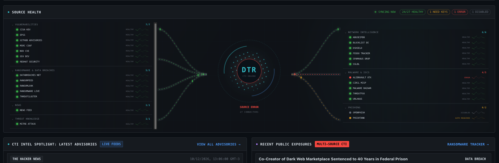

Multi-source correlation
Normalize and deduplicate indicators while preserving every contributing provider and confidence signal.
- IPs, URLs, domains and hashes
- Provider provenance
- Lifecycle and confidence
OPEN-SOURCE // AUTONOMOUS CTI
Dark Threat Radar continuously collects, normalizes and correlates vulnerabilities, malicious infrastructure, ransomware exposure and security advisories — in one analyst-ready workspace.

01 // THE PLATFORM
Every layer is designed to reduce context switching: provider-aware collection, normalized data, correlation and a single interface for investigation.
Normalize and deduplicate indicators while preserving every contributing provider and confidence signal.
Track extortion disclosures and data breaches across independent public sources, not only ransomware labels.
Connect CVEs, CISA KEV, EPSS and vendor advisories to the technologies your team actually operates.
See connector health, synchronization state, source errors and collection paths without leaving the dashboard.
02 // INTELLIGENCE LIFECYCLE
Dark Threat Radar implements the essential CTI lifecycle as a continuous, observable pipeline.
03 // LIVE SOURCE TOPOLOGY
Animated source health makes ingestion observable. The platform currently integrates 27 public CTI connectors across vulnerability, malware, network, ransomware, news and threat-knowledge categories.
04 // PERSONALIZED INTELLIGENCE
The Watchlist turns the global data stream into a focused workspace. Monitor customers, brands, domains, countries, vendors, products and specific CVEs.
One alert per incidentIndependent observations are correlated instead of duplicated.
Confidence through confirmationTwo or more sources strengthen the same finding.
Visual operational statusHoneycombs surface monitored, attention and critical states.

WATCHLIST // SANITIZED DEMO DATA
SOURCE HEALTH // 27 CONNECTORS05 // SOURCE HEALTH
Each connector reports its own condition, last synchronization and errors. The animated topology exposes the entire ingestion path directly on the dashboard.
06 // SELF-HOSTED BY DESIGN
Run Dark Threat Radar on your infrastructure with Docker Compose or native Linux. Threat records and protected credentials stay under your control.
$ git clone https://github.com/fr3dux/dark-threat-radar.git
$ cd dark-threat-radar
$ python3 scripts/setup_admin.py
$ docker compose up -d
DARK THREAT RADAR // CTI ENGINE
Start with the open-source edition, inspect the architecture and deploy it in your own environment.